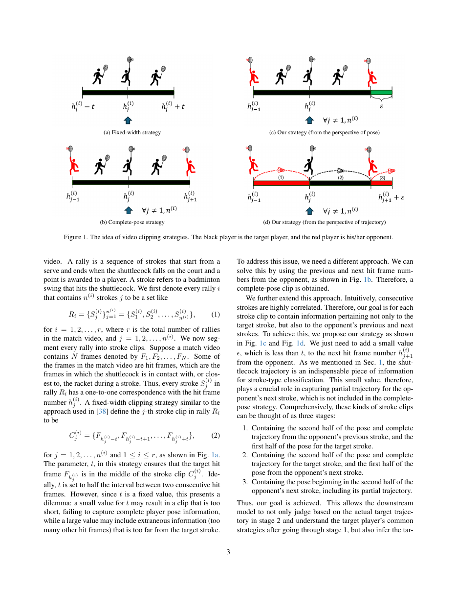
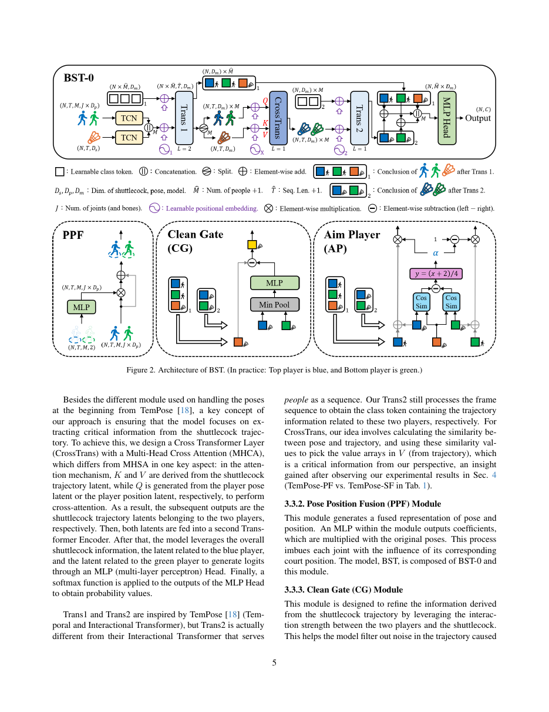
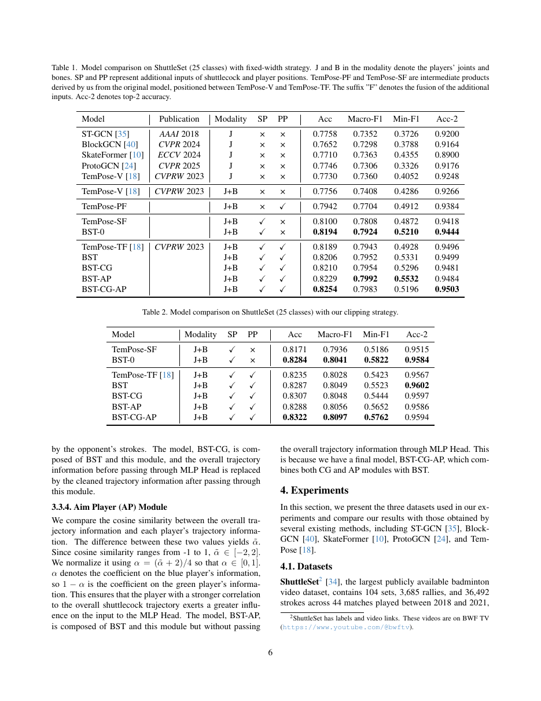
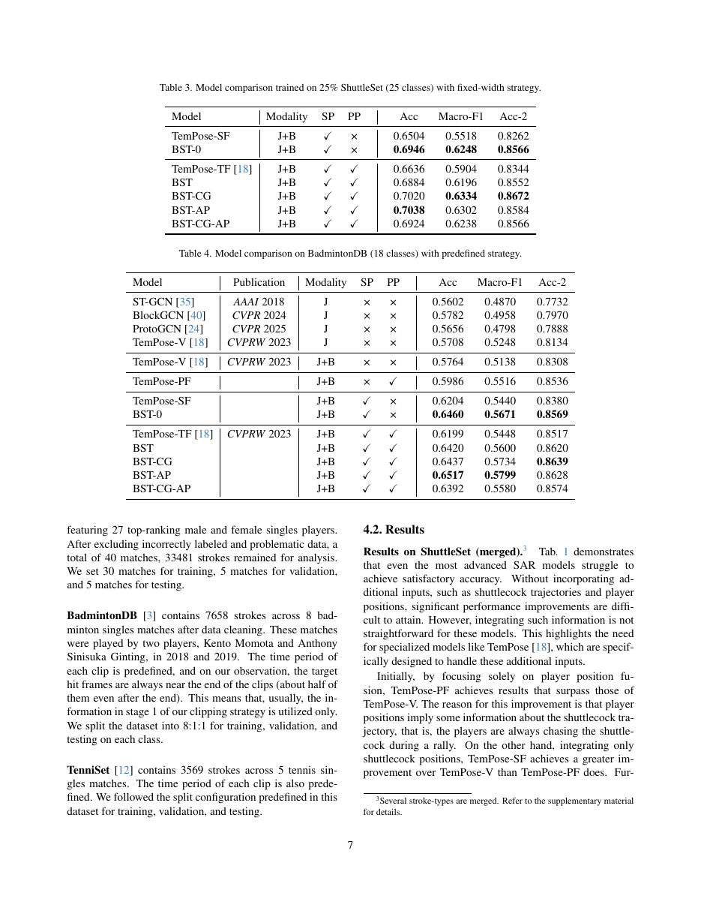

一句话结论
BST 把羽毛球分析从 shuttle tracking 推到 stroke-type classification：先围绕 hit frame 截取每个球员的挥拍片段，再把人体骨架、球路轨迹和场上位置送入 Transformer，预测单打场景中的击球类型。
论文定位
这篇论文适合作为羽毛球视频理解的“任务拓展”锚点。此前 wiki 已覆盖 TrackNet：体育高速小目标追踪网络、TrackNetV2：高效羽毛球高速小目标 2D 追踪、TrackNetV3：增强羽毛球 shuttle tracking 的数据增强与轨迹校正、TrackNetV4：用运动注意力图增强快速体育小目标追踪 与 MonoTrack：单目羽毛球击球分割与 3D 轨迹重建，它们主要解决 shuttle 2D / 3D 轨迹。BST 进一步说明：当球、场线、人体姿态和球员位置可用后，下游可以进入击球类别、技战术标签和动作纠正。
问题定义
羽毛球 stroke-type classification 的难点在于：人体挥拍动作高度相似，选手可能有假动作，且目标击球前后的对手动作会干扰片段表征。BST 的核心判断是：shuttle trajectory 直接反映真实击球结果，因此 stroke classifier 应把球路作为主证据，再用 pose 与 court position 补充身体动作和空间上下文。
方法概述
- Clipping strategy：围绕 hit frame 和相邻击球帧切出 target stroke clip，保留前一拍与后一拍的上下文。
- BST-0 backbone：编码 player joints / bones 和 shuttle positions，形成 stroke representation。
- Pose Position Fusion (PPF)：将 player position 融入 pose latent，让场上站位参与判断。
- Cleaned Graph (CG)：清理由对手动作带来的 trajectory 干扰。
- Aim Player (AP)：按 overall trajectory 与两名球员 trajectory 的相关性给目标球员加权。
关键图示

p3 展示 clipping strategy：目标击球片段应围绕 hit frame，并保留与前后击球相关的球路上下文。

p5 展示 BST 架构：pose、shuttle trajectory、player position 分支进入 Transformer 和增强模块。

p6 展示 ShuttleSet 25 类主结果。自有 clipping strategy 下，BST-CG-AP 达到 0.8322 accuracy、0.8097 macro-F1、0.9594 top-2 accuracy。

p7 展示低样本、BadmintonDB 和数据集细节，说明 BST 在 25% training data 和另一个羽毛球数据集上也保持优势。
核心实验与结果
| 数据集 / 设置 | 代表结果 | 含义 |
|---|---|---|
| ShuttleSet 25 classes, fixed-width | BST-CG-AP：Acc 0.8254、Macro-F1 0.7983、Acc-2 0.9503 | BST 系列超过 TemPose 与通用 SAR 基线 |
| ShuttleSet 25 classes, proposed clipping | BST-CG-AP：Acc 0.8322、Macro-F1 0.8097、Acc-2 0.9594 | hit-frame-centered clipping 带来增益 |
| 25% ShuttleSet training | BST-CG：Acc 0.7020、Macro-F1 0.6334 | 低样本下结构先验仍有价值 |
| BadmintonDB 18 classes | BST-AP：Acc 0.6517、Macro-F1 0.5799 | 另一个羽毛球数据集上仍强于比较模型 |
| TenniSet 6 classes | BST-AP：Acc 0.9923、Macro-F1 0.9922 | 球路 + 姿态 + 场上位置路线可迁移到网拍运动 |
| ShuttleSet 35 classes | BST-CG-AP + clipping：Acc 0.7710、Macro-F1 0.7042、Acc-2 0.9340 | 类别更细时 top-2 和混淆分析更重要 |
| 2D vs 3D pose | 2D pose 在所有列出的模型上优于估计 3D pose | 当前转播场景应优先使用可靠 2D keypoints |
Related Work 溯源价值
用户贴出的 Related Work 段落来自 BST 论文。它有两条可直接补进 wiki 的线索：
- Badminton analysis system：早期系统从广播视频结构化分析、球场/球员/球路检测、属性标注、可视化 UI、击球分类、发球检测逐步推进到 TrackNet 系列和 MonoTrack。
- Skeleton-based Action Recognition：ST-GCN、BlockGCN、SkateFormer、ProtoGCN 说明骨架动作识别已经形成 GCN、TCN、Transformer、contrastive/prototype learning 等方法分支，BST 借用这条 SAR 主线来解决羽毛球击球类型识别。
本地已把 BST v4 references 中和这两条线相关的 14 个条目追溯到 raw/ingest/2026-05-16-bst-badminton-stroke-type-transformer/related-work-trace.md。其中 TemPose、ShuttleSet、BlockGCN、SkateFormer 和 ProtoGCN 已经拆成独立 source notes；后续可继续补 badminton serve / stroke classification 的早期工作。
对当前 wiki 判断的影响
BST 把 体育 AI 视频理解 的羽毛球线从“球在哪里”推进到“这个击球是什么类型”。它给 羽毛球挥拍动作纠正 demo 应如何定义 三个工程原则：hit frame 是样本中心，shuttle trajectory 是主证据，2D pose 先行更适合当前转播 / 手机视频质量。
来源可靠性与可溯源性
- 来源层级：arXiv primary paper；v4 HTML 和 PDF 已保存。arXiv comments 标注 accepted by CVPRW 2026 / 12th CVsports，但 official proceedings pending。
- 可溯源材料：本地已保存
paper.pdf、paper-text.md、analysis.md、abstract.md、links.yaml和 related-work trace；PDF SHA256：a1197eb9d5cde5eb35689b8d79358b94925fc7cceb3e2201eab44bdfbbab34d0。 - 使用边界：当前作为 arXiv / accepted-claim evidence 使用；若后续 official proceedings 发布，需要补 venue、DOI 和最终版本。
局限或疑问
- 效果依赖 hit frame detection、shuttle tracking、court-line detection 和 pose estimation；真实系统应把这些上游置信度写进输出。
- 论文主要处理 singles stroke classification；动作纠正还需要错误模式标签、动作阶段和教练反馈字段。
- 3D pose 估计在示例中出现朝向误差，第一版 demo 应优先使用稳定 2D keypoints 与球路证据。
原始材料
raw/ingest/2026-05-16-bst-badminton-stroke-type-transformer/paper.pdfraw/ingest/2026-05-16-bst-badminton-stroke-type-transformer/paper-text.mdraw/ingest/2026-05-16-bst-badminton-stroke-type-transformer/analysis.mdraw/ingest/2026-05-16-bst-badminton-stroke-type-transformer/page-previews-contact-sheet.pngraw/ingest/2026-05-16-bst-badminton-stroke-type-transformer/abstract.mdraw/ingest/2026-05-16-bst-badminton-stroke-type-transformer/related-work-trace.mdraw/ingest/2026-05-16-bst-badminton-stroke-type-transformer/links.yaml